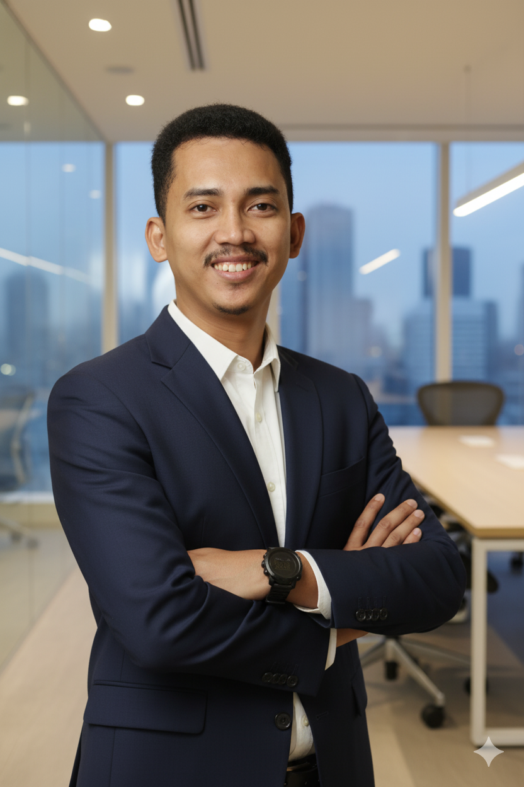

Coding & Software
Mengajar C++ dan Python, sekaligus membangun solusi dan prototipe untuk mengeksplorasi konsep pemrograman secara nyata.
Saya mengajar, membangun, dan mengeksplorasi teknologi dengan fokus pada coding, AI, data science, dan penerapannya dalam pendidikan.

Saya bekerja di persimpangan antara pendidikan, software development, AI, dan data science.
Selama lebih dari satu dekade mengajar teknologi, saya tidak hanya tertarik pada bagaimana teknologi digunakan, tetapi juga bagaimana teknologi dibangun dan diterapkan untuk memecahkan masalah nyata.
Pengalaman saya mencakup pembelajaran coding, pengembangan proyek teknologi bersama murid, computer vision, AI, data science, riset Agentic RAG, serta pelatihan teknologi untuk pendidik.
Empat area yang saat ini paling banyak membentuk pekerjaan dan eksplorasi saya.
Mengajar C++ dan Python, sekaligus membangun solusi dan prototipe untuk mengeksplorasi konsep pemrograman secara nyata.
Mengeksplorasi LLM, RAG, embeddings, evaluasi AI, dan data science melalui riset maupun implementasi praktis.
Menggunakan OpenCV dan MediaPipe untuk membuat interaksi berbasis visual dan proyek teknologi yang mudah dipahami melalui praktik.
Berbagi praktik pemanfaatan coding, AI, dan teknologi digital kepada guru melalui pelatihan dan pendampingan.
Mendampingi murid mengubah ide menjadi prototipe teknologi, dari IoT dan computer vision hingga sistem otomasi.
Menghubungkan penelitian akademik dengan kebutuhan praktis, khususnya pada AI dan teknologi pendidikan.
Beberapa karya yang merepresentasikan kombinasi antara pengalaman mengajar dan kemampuan teknis.

Riset mengenai mitigasi halusinasi dan peningkatan akurasi asisten virtual sekolah menggunakan Agentic RAG berbasis BGE-M3, hybrid retrieval, reranking, dan self-reflection.

Sistem interaktif berbasis computer vision yang mengenali jumlah jari untuk menjalankan empat operasi aritmatika dasar.

Pelatihan dan pendampingan guru dalam memanfaatkan coding, AI, dan teknologi digital untuk pembelajaran yang lebih interaktif.

Mengembangkan pembelajaran coding berbasis proyek untuk murid SMA dengan C++ dan Python, dari fundamental hingga proyek nyata.

Mendampingi pengembangan berbagai proyek murid, termasuk smart agriculture, RFID attendance, computer-vision attendance, fingerprint locker, dan sistem deteksi potensi bencana berbasis IoT.
Perjalanan profesional yang bergerak dari pengajaran teknologi menuju praktik, riset, dan pengembangan teknologi pendidikan.
Mengajar Informatika dan coding, mendampingi proyek teknologi murid, serta mengembangkan pembelajaran berbasis teknologi.
Memperdalam data science dan AI melalui pendidikan magister, dengan riset Agentic RAG untuk asisten virtual sekolah.
Mengembangkan program coding di sekolah serta terlibat dalam pengembangan ekosistem pembelajaran coding dan AI.
Lebih dari 13 tahun mengajar bidang teknologi dengan fokus pada coding, proyek, literasi digital, dan pemanfaatan teknologi.
Sebagian bingkai fotografi pribadi.


Terbuka untuk kolaborasi, berbagi praktik, pelatihan, dan percakapan mengenai teknologi, AI, dan pendidikan.